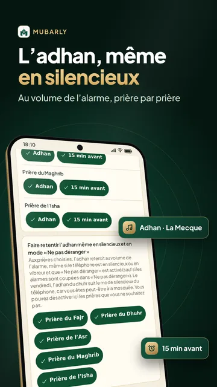
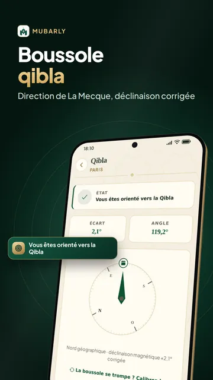
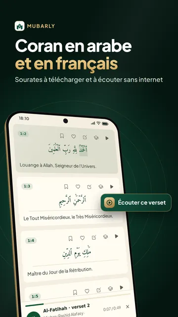
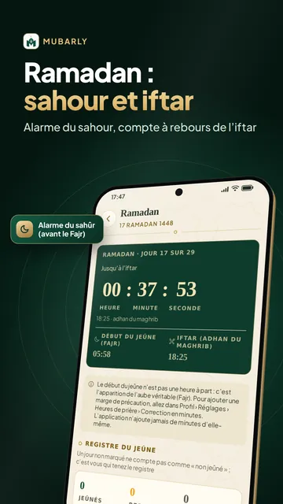
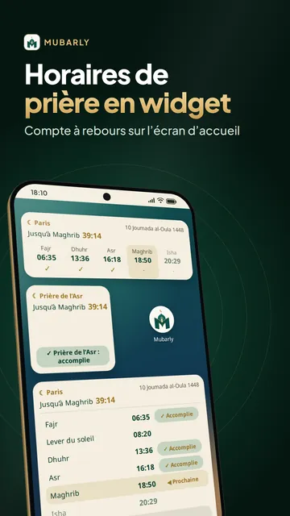
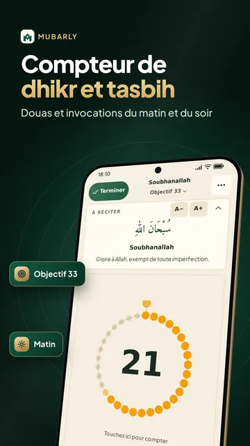
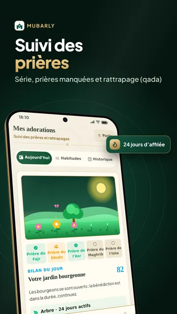

Horaires de prière et adhan







Horaires de prière par ville
Mubarly est une application musulmane qui réunit les horaires de prière, l’adhan, la qibla, le Coran, les douas et le dhikr, pour les fidèles des quatre écoles. L’adhan (ou adan, athan, azan) peut retentir au volume de l’alarme, même en mode silencieux ou « Ne pas déranger », pour les prières que vous choisissez. Les horaires, la boussole qibla et le texte arabe du mushaf fonctionnent sans internet, sans compte.
Horaires de prière et adhan
- Horaires calculés sur votre téléphone pour votre ville, en France, en Belgique, au Maroc, en Algérie, au Sénégal et partout dans le monde, avec 14 méthodes de calcul
- Son au choix : début de l’adhan de La Mecque, de Médine ou de style balkanique (les premiers takbirs, environ 20 s), carillon doux ou vibration seule
- Réglage guidé des notifications et de la batterie ; avertissement si une alerte risque d’être en retard
- Rappel avant chaque heure de prière et réponse en une touche à « Avez-vous prié ? »
- Widgets d’écran d’accueil avec la prochaine prière et son compte à rebours
Le Noble Coran
- Texte arabe intégré (graphie othmanienne ou imlaï) et pages du mushaf
- Coran en arabe et en français : traductions de Rachid Maach et de Hamidullah
- 9 récitateurs, dont Mishary Alafasy et Abdul Basit ; téléchargez une sourate comme Al-Kahf ou Yassine pour l’écouter sans internet
- Alif Ba pour apprendre à lire le Coran depuis zéro, et Mode mémorisation (Premium)
Boussole qibla
- Direction de la qibla corrigée de la déclinaison magnétique, avec une alerte si elle est perturbée ; sans boussole, trouvez La Mecque grâce au soleil
Ramadan et calendrier musulman
- Au Ramadan 2027, l’alarme du sahour (s’hour) sonne même en silencieux et se répète après 3 et 6 minutes, jusqu’à « Je suis debout »
- Alerte et compte à rebours de l’iftar (ftour) et de la fin du sahour ; règles du jeûne et de la zakat al-fitr
- Calendrier musulman (hégirien) avec la Nuit du Destin et les deux Aïd (Korité, Tabaski), ajustable selon le croissant
Douas, dhikr et 99 noms d’Allah
- Invocations du matin et du soir (adhkar ou azkar) et douas du quotidien, avec leurs sources
- Compteur de dhikr : tasbih (chapelet musulman) électronique et tasbihat après la prière
- Les 99 noms d’Allah et leur signification
Apprendre la prière, Hajj et Omra
- Guide de la prière : apprendre la prière, les ablutions et le ghusl pas à pas
- Guide du Hajj et de la Omra : les rites étape par étape, les jours, les invocations, un compteur de tawaf et de sa‘y et une liste de préparation
- Histoires des prophètes et grands événements de l’histoire islamique
Suivi des prières et rattrapage
- Marquez chaque prière (à l’heure, en retard, en groupe) et gardez votre série
- Rattraper ses prières : calcul et suivi des prières manquées et des jeûnes dus (qada) ; les jours de règles ne comptent pas comme manqués
Mosquées et zakat
- Carte des mosquées proches (plus de 300 000 dans le monde), avec l’itinéraire à pied
- Calcul de la zakat al-maal sur l’or, l’argent métal et l’épargne, au cours actuel du gramme
Quatre écoles, 20 langues
L’heure de l’Asr, les guides de la prière et du Hajj et les règles du jeûne, du rattrapage, de la zakat et du voyage suivent l’école que vous choisissez : hanafite, chaféite, malikite ou hanbalite. En 20 langues, dont le français et l’arabe.
Premium
Toutes les fonctions d’adoration sont gratuites. Pas de publicité en plein écran, et jamais sur le Coran, l’adhan, la qibla, le compteur de dhikr ou les invocations. Premium retire toutes les publicités et ajoute le Mode mémorisation, Sommeil & méditation (sons d’ambiance, tasbihat du coucher, respiration) et des thèmes pour la boussole et le compteur ; une courte vidéo débloque aussi tout Premium pendant plusieurs heures.
Confidentialité : connexion facultative, seulement pour la sauvegarde ; pas de localisation en arrière-plan, ni de caméra, ni de micro ; Mubarly ne vend pas vos données.